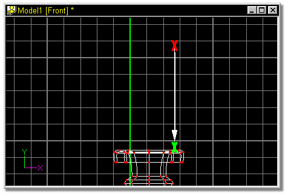
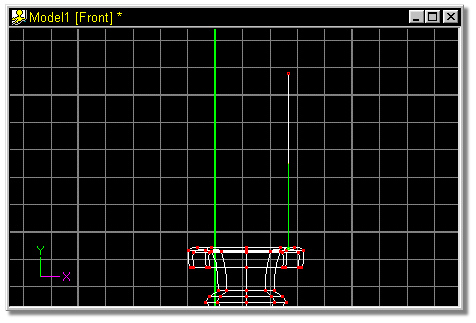
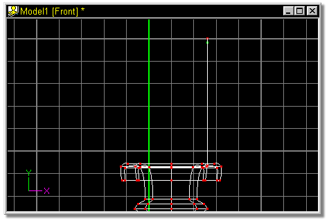

Now to create the candle itself.
Click the Add button on the Tool panel, click where the red X appears in
figure 11, and drag in the direction of the white arrow. Release the mouse button
where the green X appears in figure 11.

Figure 11
A spline similar to that shown in figure 10a should be on your screen.

Figure 11a
Now select the top control point by clicking on it (it will turn green). Press
the Y key to insert a control point, and use the up and down arrows on the
keyboard to move the point up until it looks similar to figure 12.

Figure 12